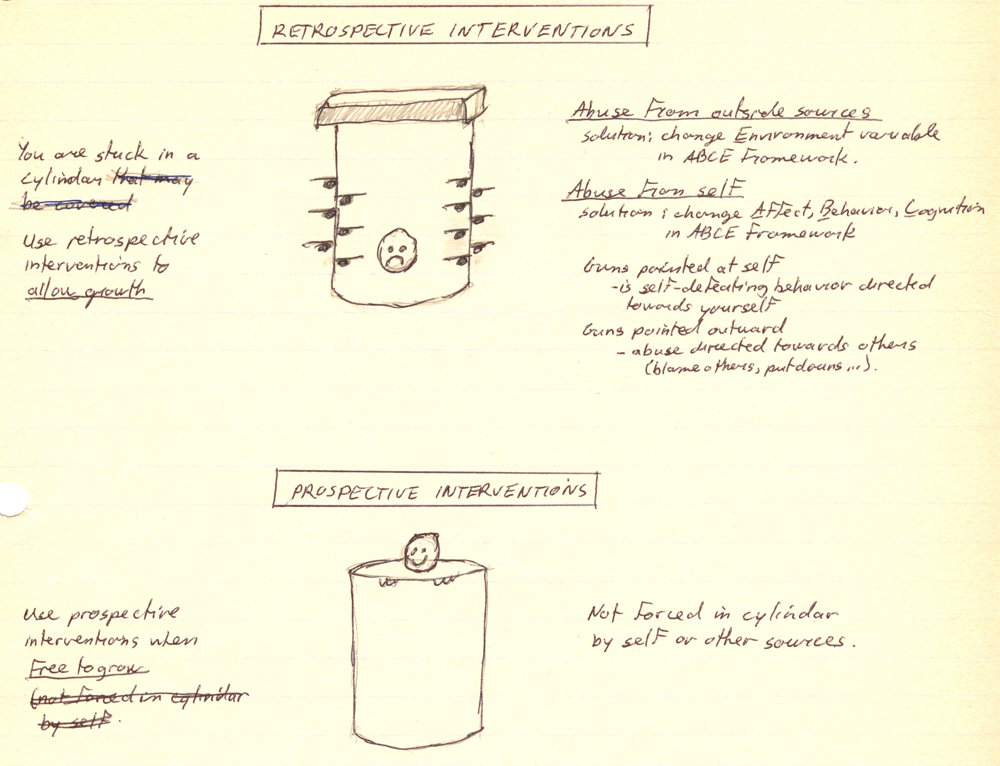

|
ch12 Self-Directed Coaching Manual
ch 12) Safe and Nurturing Environment
DEFINING SAFE ENVIRONMENT What is a Safe Environment? Why is it Important? The safe environment is an environment that promotes growth. The final goal in elite sport is to gain full potential of all your capacities, physical and mental. This is called self-actualization. At the very least, we have to get rid of things that impede growth. Only then can we concentrate on promoting growth. As an analogy, a good seed still requires good soil and watering to grow. A seed in a bad soil environment, or non-nurturing environment, such as one with no water and fertilizer, will not grow to full potential. In a human context, if we want to become our best, we have to go past our learned limitations. To become the best in the world, one has to break the mould of conformity, and try to do things that no one else has done before. Either way, we want to create an environment where we can think rationally and try new things out, without any fear of repercussions. To actualize, we must be able to perceive and interpret reality correctly. We make choices every day. Are we going to actualize or desensitize? Some things come in the way of success. Some examples include delusions, when we believing things that are not actually true. Defensiveness, is when we avoiding input from others. Desensitization is what we do when we are acting without emotion. All are problems with perceiving and interpreting reality. This affects decision-making and performance in an unpredictable way. What we cannot predict, we cannot control. Clearly, this is not what we want. So why do we get caught up in self-defeating ways? To protect ourselves. These psychological walls have been created as a result of some bad experience, causing fear and hurt feelings, and our lack of knowledge and/or courage to deal with them. How do we get rid of self-defeating ways? Start by developing a safe work environment. Understand that we cannot stop self-defeating ways “cold turkey”. These psychological walls were set up so that we could function. If we get rid of these walls without an alternate plan of living, we will disintegrate. Gradually, as a safe environment is created and reinforced, the defenses will have no use, and most will just fade. The diagram called “Retrospective and Prospective Interventions to Build a Safe Environment”, figure 12-1, explains our choices. Figure 12-1: Retrospective and Prospective Interventions to Build a Safe Environment 
CREATING SAFE SPORTS ENVIRONMENT We can start by creating a safe and nurturing sports environment by considering good communication and good team dynamics. Good communication means that we are straight forward. This means that we say what we mean. Talk in a straight forward manner and expect others to reciprocate. Good communication means that we make an effort to understand what others are saying. Confirmation, or repeating what each other says, ensures that this will happen. Assertiveness is a straight forward way of communicating and advocating what we are doing and feeling. It is not abrasive, selfish motive. It is self-interest, meaning, we are taking care of ourselves so that we can take care of those that matters to us and our team. In general, good team dynamics starts with our own understanding that we are okay as a being, and that everyone else is similarly okay. An egalitarian environment ensures that everyone is communicating on the same level, regardless of skills and abilities. Communicating on a first name basis in non-hierarchical structure, ensures this. Make note of sneaky psychological games people play to destroy egalitarianism. For example, if one person perpetually is holding up the rest, such as always being late, do not consider it as an endearing character trait. This person simply thinks that s/he is more important than the rest. Our own emotions encourage a safe nurturing environment. A sense of humour is a must, but it is important to distinguish between good humour and bad humour, to ensure that we keep peace within ourselves and the ones around us. Do laugh at mistakes. Joy is healthy both physically and mentally. Do not fuel own ego by making ourselves feel better at the expense of other people and property. Examples are laughing at the person instead of the mistake, practical jokes, getting “wasted”, destroying property. These measures provide relief for self, but is only a temporary “feel good”, with no long term benefit for self, either psychologically or physiologically. Worst, we have destroyed everything around us that matters to us most. As athletes, we commonly are very intense, and consequently,emotions can pop up, even for the most trait calm people. It is difficult to communicate when we are emotional. When something bad happens, the natural sequence of emotional events is DENIAL -> ANGER -> DEPRESSION -> RATIONALIZATION -> ACCEPTANCE as explained in emotions chapter. We just let ourselves flow through this sequence. It is best not to communicate during this time. To avoid hurting others unintentionally when we are emotional, or angry, we can go somewhere private and punch pillows. If we are are sad, cry. We just let whatever emotions happen in there own time, and soon we will have calmed down and be able to accept the situation. Then we can start thinking and talking again. Finally, a good problem solving attitude is very key at high level sport. To be the best, we are always designing and innovating. By definition of being the best, we build something new every day. So what is this good environment to find solutions? Philosophically, we bounce back and forth between two opposite approaches. Science dissects things into parts, attempting to understand each small part, and in this way get control of the situation. It’s micro-management. Creativity, in contrast, is the phenomenon of exploring ideas, with no intent of developing or controlling these ideals. Ideas are things we strive towards, but never fully reach. So on one hand, athletes need precise control of their performance, and on the other hand, an open innovative environment is needed to develop new ideas for a personalized plan. No matter what level we are, we will have uniqueness in execution of skills. We also compete in a sanction sport system, with rules and laws. On one hand, we need to learn the system we are competing in, while on the other hand, we have to think creatively to see how we personally can advance within the system. So both micro--management and macro-management are needed for success. We constantly flip back and forth between the two. Now I will offer some considerations for productive problem solving that start with our attitude. Being comfortable not knowing the answers, and being prepared to look foolish, are key traits to applying an idea that is completely new. The more we know, the more we realize that we do not know. It is not surprising then, that those who have the most understanding of something, are also the one’s who say “I donno” when looking for solutions. This is reality. We never know for sure what the answer is. Practically speaking, all we can do is give educated guess, test it, and tweak the result, until it is to our satisfaction. Notice that this is a positive building process. We are not focusing on what is wrong, the negative. Instead, we take the attitude of building success on top of success. The reason for this is two-fold. First, it is simply a task-orientated constructive process. Second, our brains are not judgemental. Whatever we focus on, it takes as truth, and processes it accordingly. If we only focus on the negative aspects of what we do, then that is what we are rehearsing and priming, in our athletic skills, and in our self-worth. Not what we want. As a heads up, be cautious of ill advice that seems to show up a lot in sporting environments. Sophomores are know-it-alls. We are called sophomores when starting university, because we go in thinking we already know everything. Then, after learning so much new stuff through school, we graduate, humbled, that we really do not know anything, and usually are driven to learn more because we feel unlearned. Quacks offer one solution ideas. The quick fix. This principle is opposite of what we are doing in this manual. Success is nurtured and built. It is not easy. It is not fast. Specifically, quacks will target someone who is on a low cycle, and offer a simple solution. When the athlete improves, they claim it is because of their intervention. The reality is that the athlete will improve eventually by doing nothing at all, as performance follows a sinuous up and down pattern. Rip-off artists withhold information. For example, weigh loss pills may work, but clients are not told how to keep the weight off, so they will have to go back for more. Rip-off artists may also use intermittent reinforcement, which is the most powerful psychological motivator. For example, the rip-off artist would tell overweight clients to take a day off the plan each week. This will reinforce bad eating habits, not good habits. (Of course we can use intermittent reinforcement ourselves to reinforce positive behaviours we like in ourselves.) In summary, a safe environment, is an ongoing positive cyclic process. [end of chapter 12] SDCM home |